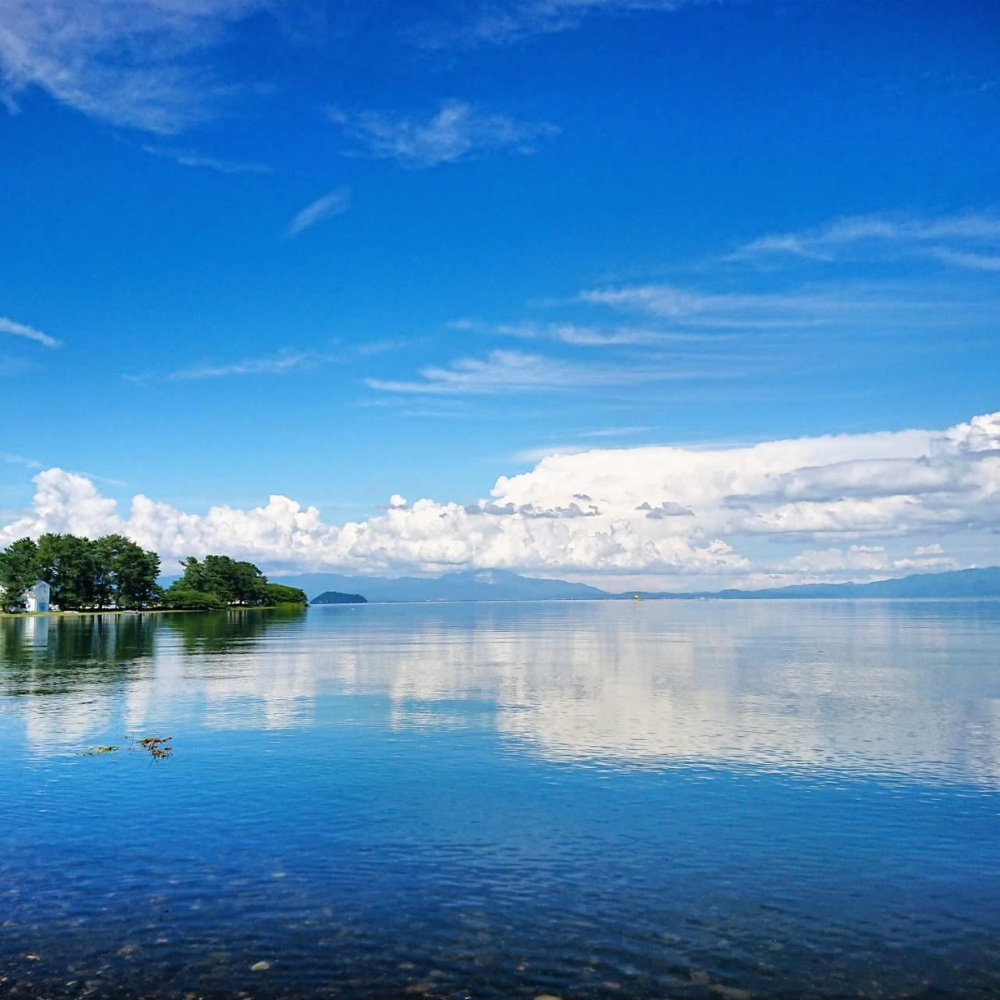
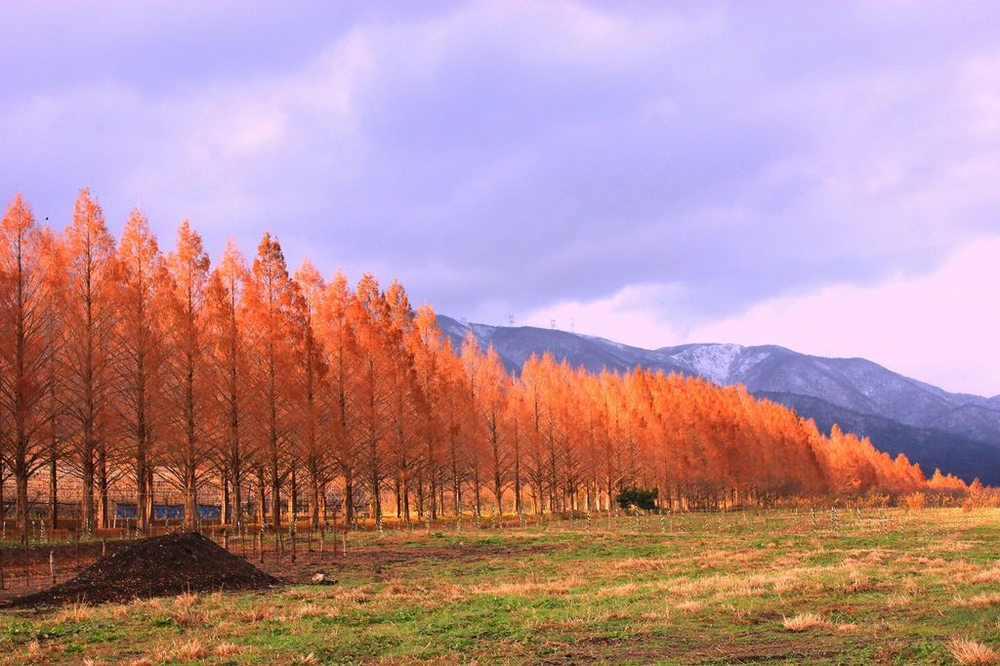
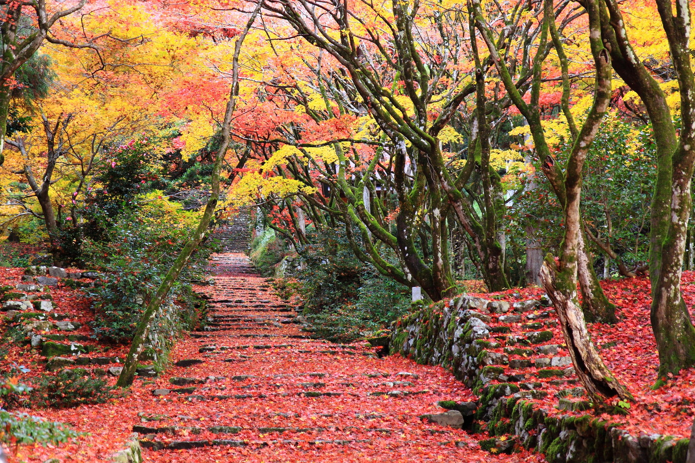
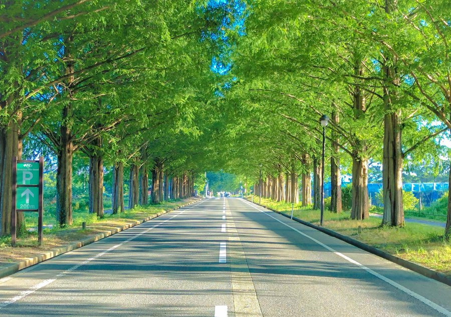
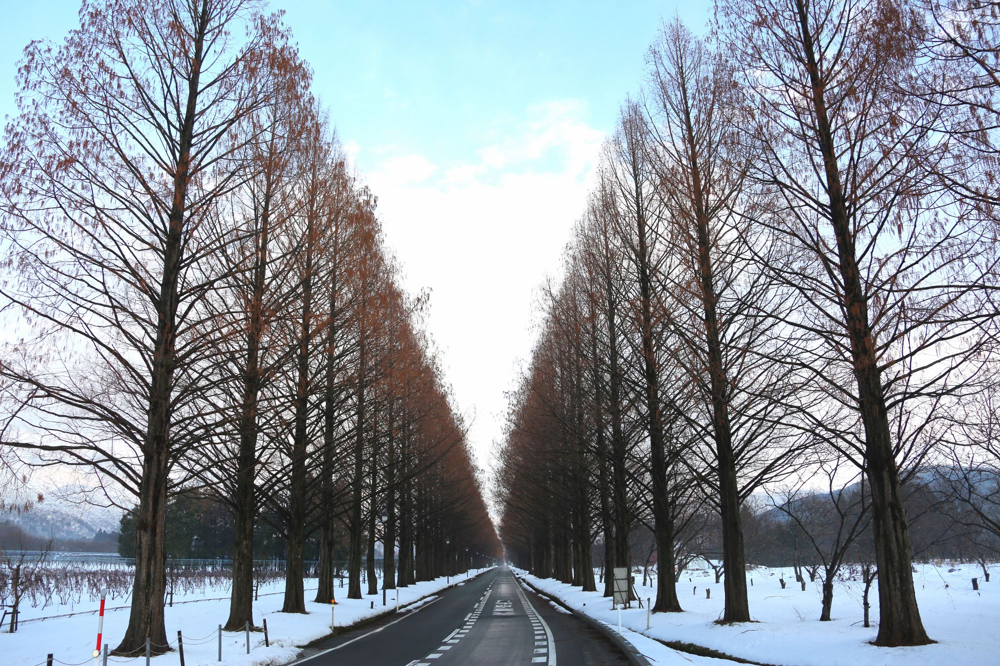
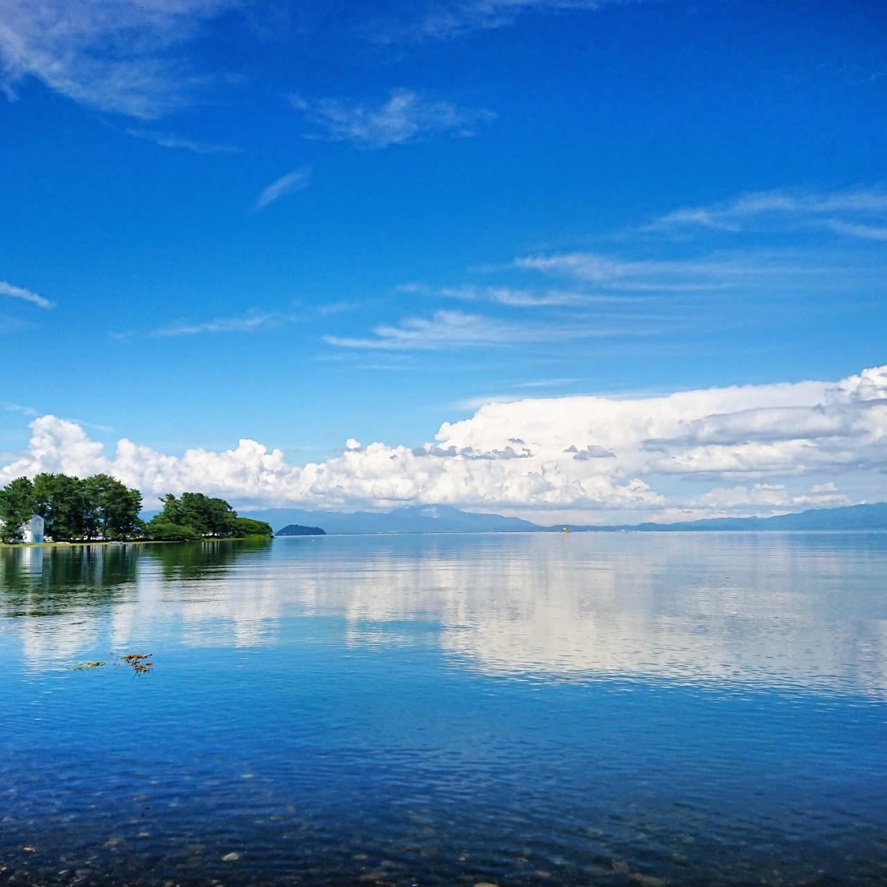
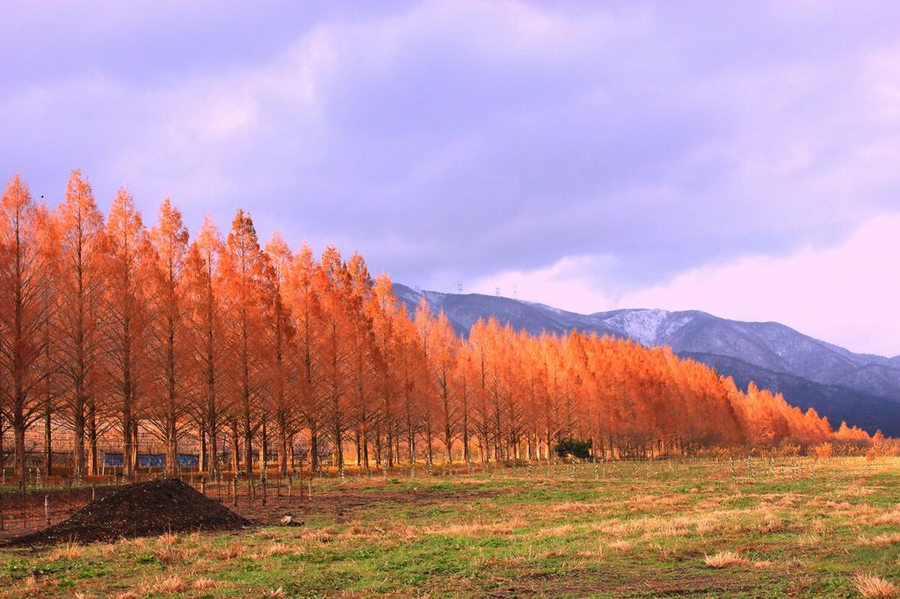
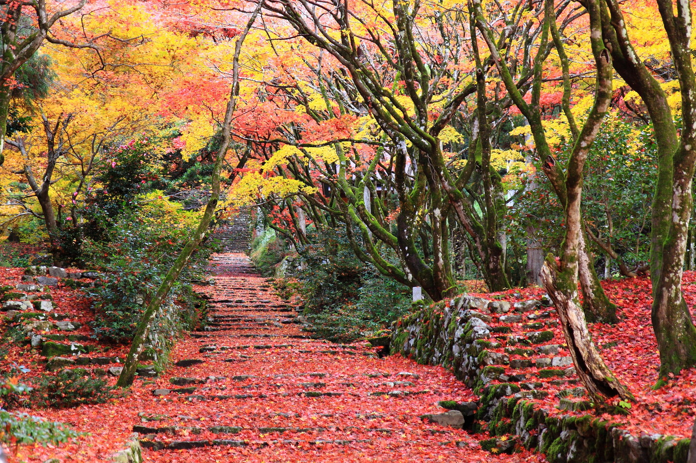
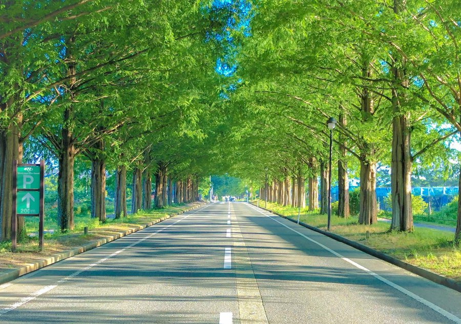
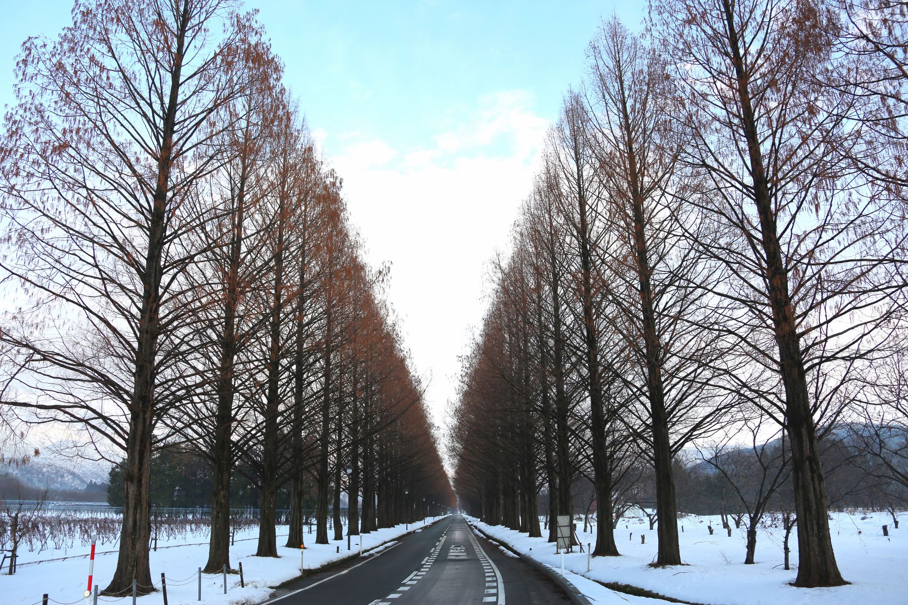

目次


2. 滋賀県の特徴

日本のほぼ真ん中に位置する滋賀県。
県土の約６分の１を占める日本最大の湖・琵琶湖を抱え、水と緑の豊かな自然にふれ合うことができます。
雄大さと変化に富んだ風景は、「琵琶湖八景」や「近江八景」として風光明媚な景色を紹介しています。
古くから文化・経済の先進地として栄えたこの地には、歴史ある寺社や戦国時代をはじめとする英傑たちの足跡など、奥深い歴史文化があり、今もなお大切に守り伝えられています。
3. 湖東地区/湖東エリア(彦根市/愛荘町/豊郷町/多賀町/甲良町)

堂々たる三重の天守が美しい天下の名城、国宝・彦根城。大名庭園やお堀めぐりでお殿様気分を味わい、城下町を再現した夢京橋キャッスルロードで町並み散策が楽しめます。
彦根からひと足伸ばせば、「お多賀さん」で親しまれる延命長寿＆縁結びの多賀大社、秋には彩り鮮やかな天台宗の３名刹・湖東三山。また、アニメの聖地として有名なヴォーリズ建築の豊郷小学校旧校舎群。
苔むした石垣、四季折々の花、歴史ある建築物、木々の狭間から望む琵琶湖。湖東平野に広がる風景は、まさに近江の感動絵巻です。
4. 湖東地区/東近江エリア(近江八幡市/東近江市/竜王町/日野町)

豊臣秀次の城下町・近江八幡。風情漂う八幡掘りを囲むように、商人屋敷やヴォーリズ建築が立ち並び、レトロな町並みが人気のスポット。近江商人のふるさと、近江八幡、日野、五個荘では、商人たちが残した足跡と、活気あふれる町の賑わいが偲ばれます。
さらに、戦国の覇王・織田信長が、天下統一の拠点とした安土。万葉ロマンにひたる蒲生野。聖徳太子ゆかりの古代信仰の地・太郎坊宮、そして、日本三大和牛の一つ「近江牛」のふるさと。ここには幾重もの時代の表情と、人びとの歴史が息づいています。
5. 湖南地区/大津エリア(大津市)

万葉の昔から志賀の都としてひらけ、東海道の宿場町・湖上交通の要衝として栄えた大津は、近江八景で知られる風光明媚の地。
比良、比叡の連山を背に、延暦寺、三井寺、西教寺の天台三総本山をはじめ、日吉大社、石山寺など、荘厳な社寺に感動を覚えます。
大津港では、花噴水のお出迎え。湖上遊覧に出かけるもよし、湖畔をのんびり散策するもよし。
また、北部に行けば、雄大な比良山系や白砂青松の美しい湖岸線など、豊かな自然が、四季折々の趣で楽しむことができます。
6. 湖南地区/湖南エリア(草津市/栗東市/守山市/野洲市)

東海道と中山道の宿場町として栄えた湖南エリア。今も残る草津宿本陣が当時の繁栄を偲ばせます。
美しい円錐形の姿から「近江富士」と呼ばれる三上山、平安時代の狛坂磨崖仏や奇岩・怪岩を見ることができる金勝山ではハイキング客で賑わい、湖岸に出れば、琵琶湖博物館やハスの群生地、なぎさ公園など、水辺のリゾートエリアが広がります。
人気のレストランやカフェなど、バラエティ豊かな飲食店も数多く、おしゃれなランチ・ディナーも楽しめます。
7. 湖南地区/甲賀エリア(湖南市/甲賀市)

紅葉狩りが楽しめる国宝の堂宇を有す湖南三山。
宿場町のたたずまいを残す水口・土山では往時を偲び、戦国の動乱を駆け巡った甲賀忍者の里では、忍びになりきり体験。
自然に包まれた山里に、無数の狸が出迎える陶器のまち・信楽で、お気に入りのうつわを探す窯元散策。
どれもこれも都会に忘れられた土の香りと自然のぬくもりを残して、人びとの心をやさしく包み込んでくれます。
8. 湖北地区/湖北エリア(長浜市/米原市)

豊臣秀吉が築き、北国街道の宿場町としても栄えた長浜。ノスタルジックな町並みの黒壁スクエアは人気の観光スポットとして知られます。また、名だたる武将たちの熱き戦いに思いを馳せる賤ヶ岳・姉川の古戦場。やすらぎに包まれる観音の里やびわ湖に浮かぶパワースポット「竹生島」、日本百名山の一つ「伊吹山」など、県内屈指の観光エリアは、訪れる人びとを湖国旅情へと誘います。
9. 湖西地区/湖西エリア(高島市)

比良の山並みと紺碧の琵琶湖。美しい自然が広がる高島。
湖中に大鳥居がそびえ立つ白鬚神社をはじめ、桜の名所・海津大崎やメタセコイヤ並木、畑の棚田など、滋賀を代表する名勝・景勝地の数々。
夏はウォータースポーツやハイキングで賑わい、冬は雪山ゲレンデに若者の声が響きます。
湖国の自然をそのまま残した心なごむ緑豊かな大空間が、訪れる人びとをやさしく包み込んでくれます。